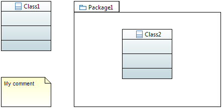
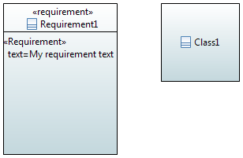
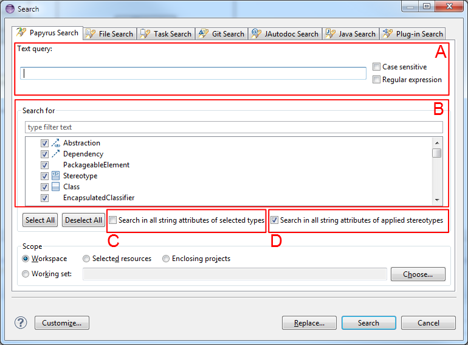
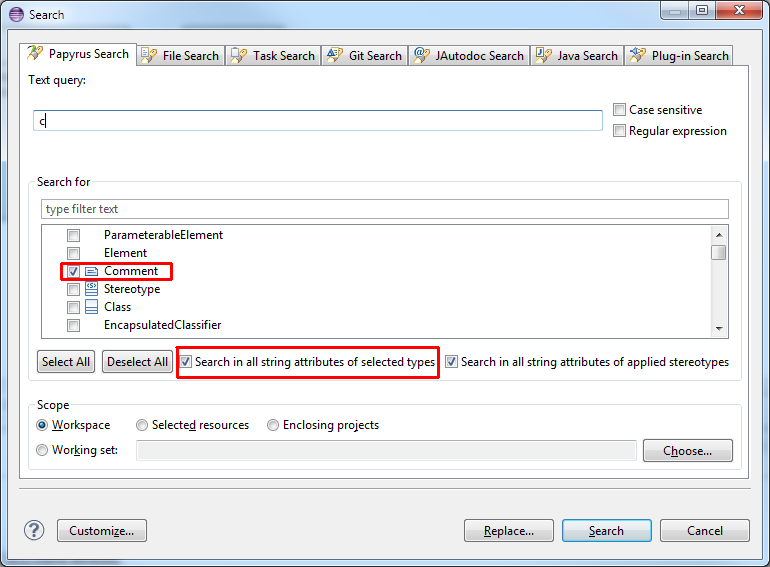
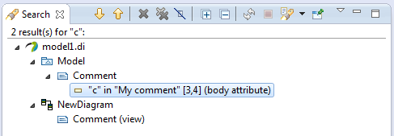
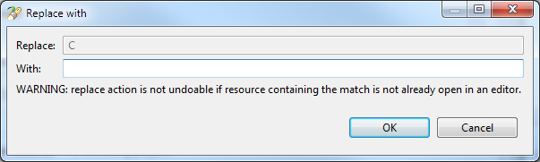
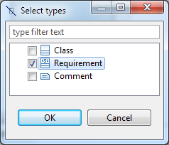
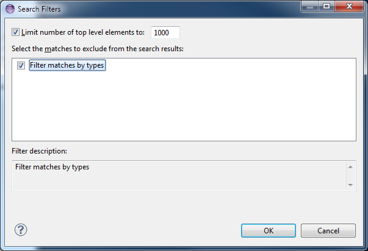

In this documentation, we will use two different UML models to illustrate the search features.
Model 1:

Model 2 :

The search feature of Papyrus helps the user to find elements in the models using a string pattern. It is able to search in string attributes of model elements.
The search dialog is illustrated in the following image:

For instance, the following search:
will provide the following results:

Note that the comment is not returned because we were note looking for all string attributes.
However, this search:

will return :

Should the user want to replace the matches of your search with another string, he/she may click on the "Replace" button in the search dialog. A new dialog will popup:

As mentioned on the dialog, the replace action is mostly undoable. Matches that are found in a resource that is not opened in an editor will be replaced and will be save so that the user cannot undo the modification.
The user can filter the results of the search by selecting the types of the elements he/she wants to show.
For instance, on the following search:

the user may filter the results by clicking on the icon identified in a red rectangle in the following picture:

this will open a new dialog where the user can select the metaclasses he/she want to show:

then, the result page will show only the matches of the selected type:

If the user wants to remove this filtering, he/she may click on the Filters button as illustrated in previous picture. This will open the following dialog:
